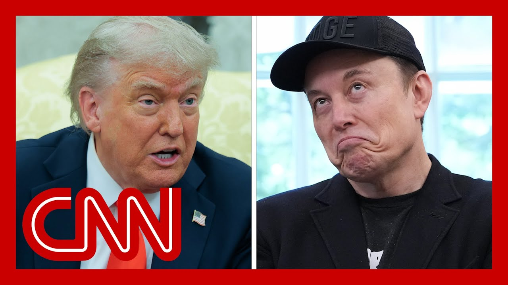

【特朗普称对马斯克非常失望，证实两人关系恶化】
Summary: The video captures President Trump expressing disappointment in Elon Musk during an Oval Office meeting, revealing a sudden rift in their previously close relationship, with Musk publicly criticizing Trump's spending bill on social media platform X.
摘要： 视频记录了特朗普总统在椭圆形办公室会议中对埃隆·马斯克表示失望，揭示了两人原本亲密关系的突然破裂，马斯克在社交媒体平台X上公开批评特朗普的支出法案。

⏱️ Estimated Reading Time: 19 min
📚 高考3500生词 📚 雅思生词 📚 托福生词 📚 GRE生词 📚 UP主推荐生词
We've been watching President Trump in the Oval Office with the German chancellor and a lot to get to here.
我们一直在关注特朗普总统与德国总理在椭圆形办公室的会晤，这里有很多内容需要梳理。
But the most interesting and perhaps important issue, political issue and policy issue is what President Trump said about his now former friend.
但最有趣且可能最重要的政治和政策问题是特朗普总统对他如今的前朋友发表的言论。
At least it seems Elon Musk and I want to go to Atlanta, train at the white House.
至少看起来埃隆·马斯克和我想要去亚特兰大，在白宫训练。
Elena. it seems as though we saw kind of the unraveling of a bromance real time.
埃琳娜，我们似乎实时见证了这段“兄弟情”的破裂。
And what our viewers saw was what it turned out to be.
观众们看到的正是最终呈现的结果。
One side of a fight.
这是一场争执的一方。
The other side was Elon Musk, real time, using his platform X to respond and kind of push back on many of the things that President Trump said.
另一方是埃隆·马斯克，他实时利用他的平台X回应并反驳特朗普总统的许多言论。
We're going to show our viewers what happened, but I want you to kind of give a sense of what brought us to this extraordinary moment.
我们将向观众展示发生了什么，但我想让你大致了解一下是什么让我们走到了这一非同寻常的时刻。
Just a few days after he gave a big, glowing goodbye to Elon Musk from the white House.
就在他从白宫对埃隆·马斯克盛情告别几天后。
Yeah, it's not even a week.
是的，甚至不到一周。
Dan, since we saw them both praise each other from the Oval Office two days later now.
丹，两天后我们就看到他们在椭圆形办公室互相称赞。
And actually, the first time, reporters are actually having the opportunity to ask the president about this.
实际上，这是记者们第一次有机会就此询问总统。
since that moment, we're now seeing this completely fresh relationship on a full display.
自那一刻起，我们现在看到这段全新的关系完全展现在公众面前。
It's very remarkable, given just how close.
考虑到他们曾经多么亲密，这非常引人注目。
I know, you know, my colleagues here at the white House.
我知道，你了解我在白宫的同事们。
And I know that the President and Musk have been for months now.
我也知道总统和马斯克这几个月来的关系。
Really him being one of the president's favorite people, on this white House complex.
他确实是总统在白宫最喜欢的人之一。
I want to give you a sense just of some of the key things I took away from the president's comments.
我想让你了解一下我从总统的评论中提取的一些关键点。
Overall, though, I would note as well that his tone was, strikingly somber when discussing this.
不过总的来说，我注意到他在讨论此事时的语气异常沉重。
And really, you could see that it saddened him almost.
真的，你几乎可以看出这让他感到难过。
You could see kind of the emotion in his tone and on his face.
你可以从他的语气和脸上看出那种情绪。
As he was discussing this, he said, quote, I've always liked Elon.
在讨论此事时，他说：“我一直喜欢埃隆。”
He said he I was very surprised.
他说他非常惊讶。
He said he would or rather had him criticize him directly, the rather than the spending bill, that the president has been working tirelessly with his team to try and muscle through Congress.
他说他宁愿让马斯克直接批评他，而不是批评支出法案，总统和他的团队一直在不懈努力推动该法案在国会通过。
He said.
他说。
And this to me was maybe the most notable, quote from the president.
对我来说，这可能是总统最引人注目的言论。
He said, look, Elon and I had had being a very key word here, had a GREAtrillionELATIONSHIP.
他说：“听着，埃隆和我曾经——‘曾经’在这里非常关键——有过一段非常好的关系。”
I don't know if we will any more.
我不知道我们是否还会再有这样的关系。
He said he was very disappointed in Musk.
他说他对马斯克非常失望。
He went on to add, that Pete Musk knew about the, quote, inner workings of the of the bill very intimately and claimed that he only started to take issue with it and had a problem with it, once he left the administration, but also once he learned of the breadth of the electric vehicle, mandate, really the credits that are being revoked in this bill, that, of course, could and will impact Tesla.
他接着补充说，马斯克非常了解该法案的“内部运作”，并声称他只是在离开政府后才开始反对该法案，并且是在了解到电动汽车授权的范围后，实际上是该法案中即将撤销的税收抵免，这当然会影响特斯拉。
we also did see, as you mentioned, Dana musk respond to this just moments ago on X.
正如你提到的，我们也看到马斯克不久前在X上对此作出回应。
He had really been posting throughout the entire time the president was speaking.
在总统讲话的整个过程中，他一直在发帖。
But then he did post, made this one post linking to a video of the president making these comments about him and said, keep the EV mandates in the bill, but get rid of the pork and the rest of it.
但后来他确实发了一篇帖子，链接到总统对他发表这些评论的视频，并说：“保留法案中的电动汽车授权，但去掉其中的‘猪肉’和其他内容。”
He said, you could have an ugly big bill or a slim and beautiful bill.
他说：“你可以有一个丑陋的大法案，也可以有一个精简而美丽的法案。”
So clearly showing, actually at the top of that post, he said, quote, whatever, really showing, you know, where he stands on this all to say.
因此，实际上在该帖子的顶部，他说：“随便吧”，这确实表明了他的立场。
I mean, if you just look at months ago, particularly leading up to him being in the white House and then ever since the president, you know, would parade Musk around Mar-A-Lago and his different properties with him, always had him by his side at the dinner table, continued to allow him to walk into the oval, you know, unannounced whenever he wanted.
我的意思是，如果你看看几个月前，尤其是他在白宫之前和之后，总统会带着马斯克在海湖庄园和他的其他房产四处炫耀，总是让他在晚餐时坐在身边，继续允许他随时未经通知就走进椭圆形办公室。
This is very far from that.
现在的情况与那时相去甚远。
And it's very unclear now where this relationship is going to go.
现在非常不清楚这段关系将走向何方。
Well, I think we're watching where it's going, and it's going pretty downhill pretty fast.
嗯，我想我们正在看着它的走向，而且它正在迅速走下坡路。
Elena, thank you so much.
埃琳娜，非常感谢你。
I am joined here by some really terrific reporters.
我这里有一些非常出色的记者与我一起。
CNN's Kristen Holmes.
CNN的克里斯滕·霍姆斯。
Josh Dawsey Dorsey of The Wall Street Journal, someone came to Young's at the New York Times and CNN's Kylie Atwood.
《华尔街日报》的乔希·道西·多尔西，《纽约时报》的某人来到杨的办公室，以及CNN的凯莉·阿特伍德。
Let's just start by recapping one of the comments that President Trump made about Elon Musk.
让我们先回顾一下特朗普总统对埃隆·马斯克的一条评论。
You saw a man who was very happy when he stood behind the oval desk.
你看到一个人站在椭圆形办公桌后时非常高兴。
And, even with a black guy, I said, do you want a little makeup?
而且，即使是一个黑人，我说：“你想要一点化妆吗？”
We'll get you the makeup.
我们会给你化妆。
But he said, no, I don't think so.
但他说：“不，我不这么认为。”
Which is interesting and very nice.
这很有趣，也非常好。
He wants to be who he is.
他想做他自己。
So you could make that statement to, I guess.
所以我想你可以这样对他说。
Look, Elon and I had a great relationship.
听着，埃隆和我有过一段很好的关系。
I don't know if.
我不知道是否。
Well, anymore.
嗯，还会再有。
I was surprised because you were here.
我很惊讶，因为你当时在场。
Everybody in this room practically was here as we had a wonderful send off.
这个房间里的每个人几乎都在这里，我们有一个美好的送别。
He said wonderful things about me.
他说了很多关于我的好话。
You couldn't have nicer said the best thing.
你不可能说得更好了。
He's worn the hat.
他戴过那顶帽子。
Trump was right about everything.
特朗普在所有事情上都是对的。
And I am right about the great, big, beautiful bill.
而我对这个伟大、庞大、美丽的法案的看法是正确的。
And that's what this is all about right now.
这就是现在的一切。
And I just want to make that clear to our viewers.
我只是想向我们的观众明确这一点。
I'm sure, you understand that this, relationship basically exploded yesterday when Elon Musk started really aggressively putting on his social media platform that this bill that he is desperate to get through the Senate after it passed the House is bad.
我相信你明白，这段关系基本上在昨天破裂了，当时埃隆·马斯克开始在他的社交媒体平台上非常激进地表示，这项在众议院通过后他迫切希望参议院通过的法案很糟糕。
He wrote.
他写道。
Kill the bill and many other things.
“扼杀该法案”以及许多其他内容。
And so you just saw the president say what we just heard.
所以你刚才听到总统说了我们刚才听到的话。
He said, people leave my administration.
他说：“人们离开我的政府。”
They love us, and that at some point they miss it so badly.
他们爱我们，以至于在某个时候他们非常想念它。
Some of them embrace it, some of them become hostile.
有些人接受它，有些人变得敌对。
Trump derangement syndrome.
特朗普精神错乱综合症。
So this is really fascinating because as of yesterday, at the exact same time, maybe a few hours later into the afternoon, I spoke to a number of Trump's top advisers who still were unsure of how he was going to respond to There were still a lot of questions.
这真的很有趣，因为截至昨天，几乎在同一时间，也许是下午晚些时候，我与特朗普的几位高级顾问交谈过，他们仍然不确定他将如何回应，仍然有很多问题。
He was raising questions with them as to, do you think this is just a business decision?
他向他们提出疑问：“你认为这只是商业决定吗？”
Do you think he's lashing out at this because of these electric vehicle mandates?
“你认为他是因为这些电动汽车授权而对此大发雷霆吗？”
It's probably something he has to do now that he's leaving the government.
既然他要离开政府，这可能是他必须做的事情。
And it's all about the business.
这都是关于商业的。
Obviously, Donald Trump likes to make things about money and business kind of his way of saying, okay, maybe that's what he's doing here.
显然，唐纳德·特朗普喜欢把事情归结为金钱和商业，这有点像他的说法：“好吧，也许他在这里就是这么做的。”
He was angry when that first tweet came out two days ago during the briefing.
两天前简报期间第一条推文发出时他很生气。
But then he also had a lot of questions as to where this was coming from, because he did believe that Elon knew about the EV mandate.
但他也有很多疑问，想知道这从何而来，因为他确实相信埃隆知道电动汽车授权。
His team does believe that this is all about business, all about the EV mandate that this is all about, these credits that Elon Musk believes are unfair, which he actually.
他的团队确实认为这都是关于商业，关于电动汽车授权，关于这些埃隆·马斯克认为不公平的税收抵免，实际上他。
And it's not just that it's big and full of.
而且不仅仅是它庞大且充满。
Right?
对吧？
It's not pork.
这不是“猪肉”。
It's not what he's saying there.
这不是他在那里说的。
But I think the most telling thing about this is that clearly we've hit a new marker since then, which is we had a great relationship.
但我认为最能说明问题的是，显然我们自那以后达到了一个新的标志，那就是“我们有过一段很好的关系”。
I don't know if we will anymore.
“我不知道我们是否还会再有。”
And I can tell you that members of Trump's team have reached out to Elon Musk.
我可以告诉你，特朗普团队的成员已经联系了埃隆·马斯克。
No response.
没有回应。
Donald Trump and Elon Musk have not spoken.
唐纳德·特朗普和埃隆·马斯克没有交谈。
Yeah, and this was baffling, though.
是的，不过这令人困惑。
For several months, Trump has said publicly, repeatedly that he and Ian are close and vice versa.
几个月来，特朗普公开反复表示他和伊恩关系密切，反之亦然。
But there's been lots of frustrations that have happened between the two man over political endorsements, over Elon trying to get a briefing of the Department of Defense over China, over some of the other staff fights inside the white House.
但两人之间有很多挫折，涉及政治背书、埃隆试图获得国防部关于中国的简报、白宫内部的其他一些人员争斗。
And Trump's team was ready to see Elon go.
特朗普的团队已经准备好看到埃隆离开。
There's no doubt about it.
这一点毫无疑问。
Trump himself wanted to have an event on Friday and try to have an amicable, breakup here, in part because Iran is such a wealthy donor.
特朗普本人想在周五举办一个活动，试图在这里友好地分手，部分原因是伊朗是如此富有的捐赠者。
He is the richest man in the world.
他是世界上最富有的人。
He fueled hundreds of millions of dollars for this campaign.
他为这次竞选投入了数亿美元。
He is a political force to a large degree.
他在很大程度上是一股政治力量。
He controls one of the main ways that Republicans communicate.
他控制着共和党人交流的主要方式之一。
I mean, this unlike some other relationships, Trump has had a breakup here.
我的意思是，与其他一些关系不同，特朗普在这里经历了一次分手。
Could go, could hurt him, too.
可能会走，也可能会伤害他。
I mean, there really is a lot of caution here that I think his his people are trying to navigate.
我的意思是，这里确实有很多谨慎，我认为他的人正在试图应对。
Okay, where are we going from here?
好吧，我们从这里去哪里？
Because we're playing with with with live, and this is what you were referring to.
因为我们正在与现场打交道，这就是你所指的。
You see on the screen this is a video of the two of them in the Oval Office, which, by the way, I don't want to not I want to I don't want to let it go unmentioned that the president made fun of the black eye that Elon Musk had.
你在屏幕上看到的是他们在椭圆形办公室的视频，顺便说一句，我不想不我不想不提总统取笑埃隆·马斯克的黑眼圈。
I mean, that was very clear that he wanted to get that in there.
我的意思是，很明显他想把这一点放进去。
But when it comes to the substance of what we're talking about here, I also want to underscore that they are kind of saying the quiet part out loud with regard to Elon Musk's business interests and the fact that there was even a question inside the white House, maybe by the president himself, because he just said it in, in the Oval Office that Elon Musk doesn't like this bill because it's not good for his business.
但就我们在这里讨论的实质内容而言，我还想强调，他们某种程度上是在大声说出埃隆·马斯克的商业利益这一不言而喻的部分，以及白宫内部甚至有一个问题，可能是总统本人提出的，因为他刚刚在椭圆形办公室说，埃隆·马斯克不喜欢这项法案，因为它对他的业务不利。
The EV mandate, electric vehicle mandate goes away.
电动汽车授权消失了。
I mean, it's they're not even pretending that there's no conflict of interest here.
我的意思是，他们甚至没有假装这里没有利益冲突。
And that was one of the things that Musk responded to on real time.
这是马斯克实时回应的事情之一。
He said false.
他说“错误”。
This bill was never shot with.
这项法案从未被展示给。
Well, first he said, that's not about that.
嗯，首先他说：“不是关于那个。”
And then he said false.
然后他说“错误”。
This bill was never shown to me even once and was passed in the dead of night.
这项法案甚至从未向我展示过一次，而且是在深夜通过的。
So fast that almost no one in Congress could even read it.
如此之快，以至于国会中几乎没有人能阅读它。
That was in response to, Trump saying he was disappointed with Musk because he knew the inner workings of this bill better than anyone sitting here.
这是对特朗普说他对马斯克感到失望的回应，因为马斯克比在座的任何人都更了解该法案的内部运作。
You had the president in the Oval Office essentially say that Elon Musk criticism, is a matter of personal grievance.
总统在椭圆形办公室基本上说，埃隆·马斯克的批评是个人不满的问题。
It's a matter of the fact that he thinks that this will hurt his business.
这是他认为这会损害他的业务的问题。
Elon, up until this point, when he has shared criticism for this bill, has said that it's about undermining, really the effort he took to cut federal bureaucracy, reduce the deficit as well.
埃隆，到目前为止，当他分享对该法案的批评时，他说这是关于破坏他削减联邦官僚机构和减少赤字的努力。
And he said that it's about sort of fiscal responsibility.
他说这主要是关乎财政责任。
Here. You have the president completely saying that that is not true,
这里，总统明确表示那不是真的，
and that it's really actually about somebody trying to protect his business,
而是有人在试图保护自己的商业利益，
which is interesting also because Elon was with the administration
这很有意思，因为埃隆曾与政府合作，
when the Trump administration was rolling back EV subsidies that the Biden administration put forward as well.
当时特朗普政府正取消拜登政府提出的电动车补贴。
So that's another detail out here.
这是另一个值得注意的细节。
But it's remarkable to see here just the shift in the past couple days.
但过去几天的转变确实引人注目。
I asked the president last Friday about reports of Elon Musk's drug use as well,
上周五我还问过总统关于埃隆·马斯克吸毒的报道，
and he went out of his way to say that that is not a concern.
他特意强调这不是一个值得担忧的问题。
That is not troubling to him, that he still stands by Elon Musk.
这对他来说并不困扰，他仍然支持埃隆·马斯克。
All of that.
所有这些。
Now to this point where now you have criticism against a signature part of Trump's domestic agenda,
现在却变成了批评特朗普国内政策的标志性部分，
and now he's saying, well, this is someone who's just worried about their business, essentially.
而他现在说，这个人本质上只是担心自己的商业利益。